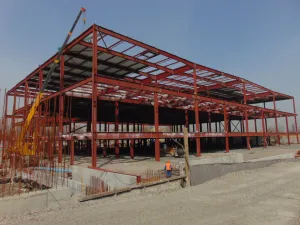

Україна, м. Київ, Голосіївський проспект, 89


УЛЬТРАЗВУКОВИЙ КОНТРОЛЬ (UT)
Ультразвуковий контроль (УЗК) є основним методом неруйнівного контролю. Вперше здійснити неруйнівний контроль ультразвуковою хвилею вдалось Сергію Яковлевичу Соколову - видатному фізику. Він показав здібність ультразвуку проходити через метали без видимого поглинання (1972). Застосував це явище для виявлення дефектів в металах (1928), поклавши початок ультразвукової дефектоскопії. Розробив різні конструкції ультразвукових дефектоскопів. Висунув ідею дослідження структури твердих тіл і фазових переходів ультразвуковим методом. А вже через кілька років ультразвуковий контроль набув найбільшу популярність серед методів неруйнівного контролю. Крім того, для деяких виробів він став обов`язковим.
Суть ультразвукового методу полягає в випромінюванні в виріб і наступним прийняттям відбитих ультразвукових коливань за допомогою спеціального обладнання - ультразвукового дефектоскопа та пьєзоелектричного перетворювача і подальшому аналізї отриманих даних з метою визначення дефектів, а також їх еквівалентного розміру, форми (об`ємний/плаский), виду (точковий/протяжний), глибини залягання та інше.
Параметри виявлених дефектів визначаються за допомогою ультразвукових дефектоскопів. Так наприклад, за часом розповсюдження ультразвуку в виробі (якщо відома швидкість ультразвуку, швидкість розповсюдження ультразвукових хвиль в різних матеріалах) визначають відстань до дефекту, а по амплітуді відбитого імпульса - його еквівалентний розмір.
Для проведення ультразвукового контролю в залежності від конкретних умов (марки матеріалу, його товщини, геометричних особливостей поверхні контроля, мінімально виявляємих розмірів дефектів та інше) на нашому підприємстві є достатньо широкий асортимент засобів контролю.
До головних переваг ультразвукового контролю якості металів та зварних з`єднань відносяться:
- висока точність і швидкість дослідження, а також його низька вартість;
- безпечність для людини (на відміну від рентгеновської дефектоскопії;)
- висока мобільність завдяки застосуванню портативних ультразвукових дефектоскопів;
- можливість проведення ультразвукового контролю (в окремих випадках) на діючому об`єкті, тобто на час проведення УЗК не потрібно виведення досліджуємої деталі/об`єкта з експлуатацї;
- при проведенні УЗК досліджуємий об`єкт не пошкоджується.
До основних недоліів УЗК відноситься:
- при ультразвуковій дефектоскопії неможливо дати відповідь на питання про реальний розмір дефекту, розмір дефекту визначається його відбивною здатністю і тому за результатами контроля дається еквівалентний розмір дефекта (наприклад: наявні в виробі два реальні дефекта одного розміру і форми, розміщені на одній глибині, але один з яких заповнений повітрям, а інший шлаком будуть давати відбиті імпульси різної амплітуди і відповідно оцінені як дефекти, що мають різні розміри). Варто відмітити, що деякі дефекти в силу їх характера, форми або розташування в об`єкті контроля практично неможливо виявити ультразвуковим методом. Крім того, важко здійснювати контроль деталей невеликого розміру і товщини, а також деталей, що мають складну форму з криволінійними та сферичними поверхнями малого радіусу. Крім того при проведенні ультразвукового контролю на відміну від радіографічного, як правило, неможливо однозначно охарактеризувати дефект (шлакове включення, пора, вольфрамове включення та інше);
- складності при ультразвуковому контролі металів з крупнозернистою структурою, через велике розсіювання і сильне затухання ультразвуку;
- підготовка поверхні контроля до контролю для вводу ультразвукових хвиль в метал, а саме: очистка поверхні контроля від забруднення, окалини яка відслоюється, іржі, бризок розплавленог металу та інше, а також створення необхідної шерохуватості поверхні не гірше Rz 40 та хвилястості не більше 0,015, так як навіть невеликий повітряний зазор між пьєзоелектроперетворювачем (ПЕП) і виробом може стати перепоною для розповсюдження ультразвукових хвиль;
- необхідність нанесення на контрольований участок виробу після його зачистки безпосереднью перед виконанням контролю контактних рідин (спеціальні гелі, гліцерин, машинне масло та інше) для забезпечення стабільного акустичного контакту.
Ультразвуковий контроль наряду з іншими фізичними методами (рентгенографічний контроль, капілярний контроль, магнітно-порошковий контроль) є надійним і високоефективним засобом для виявлення можливих дефектів. Потребує наявності спеціально підготовлених спеціалістів, спеціалізованого обладнання і допоміжних засобів контроля, і , крім цього , пред`являє особливі вимоги до поверхні виробу під контроль.
Деякі виробники з метою економії або некомпетентності ігнорують проведення неруйнівного контролю продукції або згадують про нього лише на останній стадії - вже безпосередньо перед здачею об`єкта (це призводить до дотаткової втрати часу та непередбачуваним витратам), коли контроль буває технічно неможливо виконати. Подібне відношення до контролю якості, як правило, призводить до аварійних ситуацій в процесі експлуатації і здатне привести навіть до техногенних катастроф.